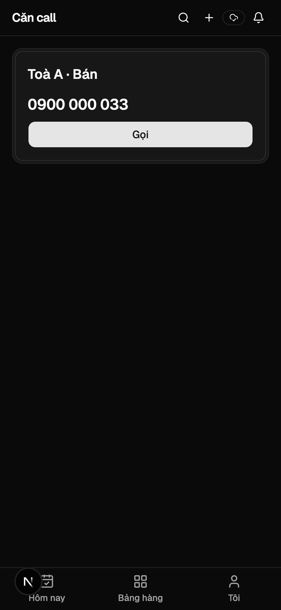
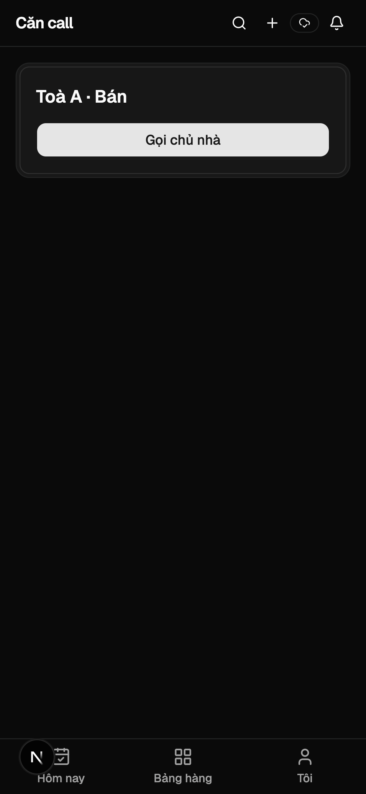
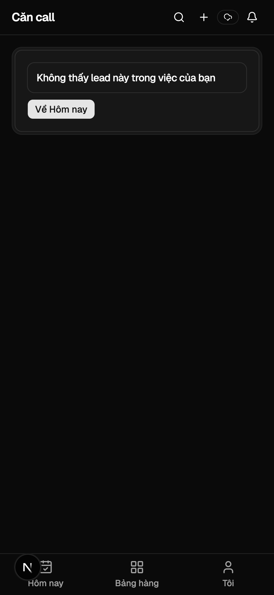
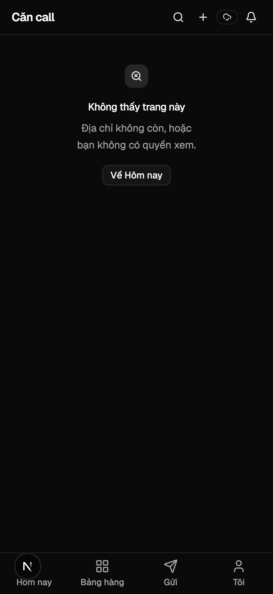
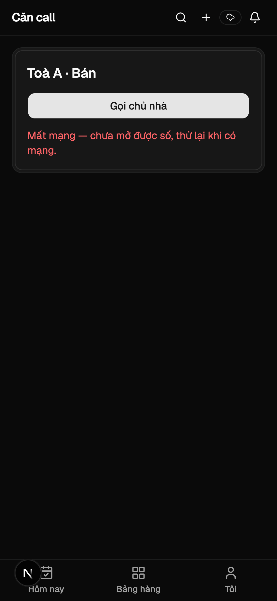

Đầu chủ bấm Gọi trên máy tính thì chế độ cuộc gọi mở và điện thoại của mình quay số chủ nhà
Vì sao làm
Mức tối thiểu chốt 29/10; tổng đài là một loại kết nối, để sau Số đo hai tuần thử gần nhất (Tham chiếu §11): Tỉ lệ thao tác trên máy tính / điện thoại theo vai — ngưỡng số đặt trước khi thử.
Đã hứa
- AC-1 — Given đầu chủ được giao một lead còn việc ở nấc Đã gửi, Đã nhận hay Đã gọi và có n thiết bị đã bật thông báo, When gọi
- AC-2 — Given một lead của sàn, When người khác gọi quay số — đầu chủ khác cùng sàn, telesales đã nhập lead, trưởng nhóm, quản
- AC-3 — Given lead có số chủ, mã căn và giá, When thông báo quay số được dựng, ghi và gửi, và khi máy chủ trả lời hay ghi nhật
- AC-4 — Given đầu chủ chưa bật thông báo trên thiết bị nào, hoặc chỉ bật trên chính máy tính đang gọi, When gọi quay số, Then
- AC-5 — Given đầu chủ ở chế độ cuộc gọi của một lead, When bấm «Quay số trên điện thoại», Then nút khoá trong lúc gửi; xong
- AC-6 — Given đầu chủ chạm thông báo quay số trên điện thoại, When trang quay số `/units/call/dial?lead=<id>` mở, Then trang
- AC-7 — Given Tham chiếu, When đọc §12 Sổ quyết định, Then có dòng «Gọi từ máy tính» ghi cách điện thoại quay số (thông báo của
Thiết kế
docs/superpowers/specs/2026-11-02-goi-tu-may-tinh-design.md
Quyết định
- 2026-11-02 · Máy · approach · S1 — Đã tra tri thức: Đầu chủ bấm Gọi trên máy tính thì chế độ cuộc gọi mở và điện thoại của mình quay số chủ nhàKho đã khai tri_thuc — bước thiết kế tra trang trước khi chọn.
- 2026-11-02 · Máy · approach · S1 — Máy tính nhờ điện thoại quay số bằng thông báo của hàng 26: nút trong chế độ cuộc gọi gửi thông báo «Gọi chủ nhà» tới các thiết bị đã bật của chính đầu chủ, chạm mở trang quay số; không dùng mã QR.Hàng 30 khai đứng trên hàng 26 và 28 trong lộ trình; QR cần thư viện mới (đổi package-lock, ngoài vùng) và tổng đài đã chốt để sau.
- 2026-11-02 · Máy · approach · S1 — Ai gọi quay số được = đúng ai mở số của lead được (đầu chủ đang được giao, lead còn việc); trang quay số mở số qua cửa của mo-so-lead nên mỗi lần quay là một vết.Quay số dẫn tới mở số; hai cửa khác luật thì cửa rộng hơn thành đường vòng để gửi thông báo về lead người khác.
- 2026-11-02 · Máy · approach · S1 — Trang quay số không tự quay khi mở: một nút «Gọi chủ nhà», bấm thì mở số rồi đưa tới tel:, kèm nút «Gọi» dự phòng.Trình duyệt chỉ mở ứng dụng gọi từ một lần bấm của người; tự mở số khi tải trang còn ghi vết mỗi lần tải lại.
- 2026-11-02 · Máy · descope · S1 — bỏ coverage-scan — luồng thẳng nối hai cửa có sẵn (thông báo hàng 26, mở số mo-so-lead), trục kê thẳng ở Coverage; đổi lại không có bằng chứng độ phủKhông gian AC một chiều: một nút, một thông báo, một trang; các trục ai gọi, thiết bị, rò lớp nguồn, hai màn đã kê trong contract.
- 2026-11-02 · Máy · descope · S1 — bỏ design-pass — hai màn nhỏ theo khuôn có sẵn (nút trong FramePanel của chế độ cuộc gọi, trang một nút trên điện thoại); hình chụp có ở lượt chấmMàn không có lựa chọn bố cục mới: khuôn cuoc-goi của hàng 28 và trang một việc; Đặc tả UX đã khai bảng trạng thái.
- 2026-11-02 · Máy · approach · S1 — Thông báo quay số tới mọi thiết bị đã bật của người ấy, kể cả chính máy tính nếu nó cũng bật; không chọn thiết bị.Hộp thư đi của hàng 26 gửi theo người (app.push_outbox_add), không có trường loại thiết bị; tách thiết bị cần migration ngoài vùng.
- 2026-11-02 · Máy · approach · S1 — Hỏi-1: máy tính nhờ điện thoại quay số bằng thông báo của hàng 26 (khuyến nghị) hay bằng mã QR hiện trên máy tính?§13 chốt điều phải đạt (bấm trên máy tính thì điện thoại quay số), không chốt cách; phản biện context sạch chỉ ra đây là đánh đổi sản phẩm.
- 2026-11-02 · Máy · approach · S1 — Máy tính gửi kèm điểm đăng ký thông báo của chính nó (nếu có); máy chủ trả thêm số thiết bị khác máy này, và lời báo đếm theo số ấy — chỉ có máy tính bật thì báo «chưa có điện thoại nào».Phản biện context sạch: đếm mọi thiết bị thì đầu chủ chỉ bật trên máy tính vẫn thấy «Đã gửi tới 1 thiết bị» mà không điện thoại nào nhận; đọc đăng ký của chính mình đã được luật theo dòng cho phép (migration 018).
- 2026-11-02 · Máy · descope · S1 — bỏ design-pass — trang quay số dựng trong khuôn cuoc-goi (KhungCuocGoi, một Frame) như chế độ cuộc gọi, nút máy tính là một dòng trong FramePanel thẻ lead; khung 375 chụp ở lượt chấm (E9)Phản biện context sạch: dòng bỏ cũ không trỏ khuôn có sẵn; nay trỏ design/patterns/cuoc-goi.md.
- 2026-11-02 · Máy · approach · gate1 — Hỏi-1: thông báo (theo khuyến nghị) — chủ kho trả lời «duyệt» trên thẻ Cổng Phạm vi, không chọn QRCâu gộp «/acceptance-gate:approve goi-tu-may-tinh duyệt» duyệt nguyên bản nháp, mà bản nháp theo khuyến nghị thông báo (dòng -8).
- 2026-11-02 · Người · seal · gate1 —
- 2026-11-02 · Máy · fix · S3 — Chiều đỏ của E2 đổi chỗ: bỏ điều kiện «người được giao» không làm dòng «đầu chủ khác cùng sàn» ra 200 vì luật đọc theo dòng của bảng lead đã chặn trước; bài kiểm thêm một ca ngoài bảng mười dòng — đầu chủ kiêm người nhập tự nhập lead về dc1 — và chiều đỏ đo trên ca ấy.Chạy thử phá ở S3: bảng mười dòng vẫn xanh khi bỏ điều kiện; ca mới đỏ «đầu chủ kiêm người nhập gọi lead về dc1» (packages/api/test-db/goi-tu-may-tinh.test.ts, E2).
- 2026-11-02 · Máy · fix · S4-r1 — Sửa sau lượt chấm 1: bài kiểm E4 bọc nhật ký quanh MỌI lời gọi quay số (cả mười một lời bị từ chối) và dò số của từng lead bị từ chối trong nhật ký; bảng bản đồ khuôn của ui-lint thêm trang quay số (cham-tep L-0211-12); khung 2 của E8 dựng lại bằng cách gỡ các đăng ký mẫu cũ của đầu chủ mẫu 1 trên cơ sở dữ liệu dev dãy L trước lượt chấm.Lượt 1 REJECT: finding trong hợp đồng AC-3 (E4 chỉ bọc một lời gọi thành công), suite ui-lint đỏ ở ban-do-khuon.test.mjs, E8 khung 2 không dựng được vì tài khoản mẫu đã có 4 đăng ký từ các lượt trước.
- 2026-11-02 · Máy · revisit · gate2 — Ngoài-1: ghi Known limitsmáy tự định tuyến theo đề xuất S4 «known-limits» — kho bật feature_loop.ngoai_n_tu_dinh_tuyen
- 2026-11-02 · Máy · revisit · gate2 — Ngoài-2: ghi Known limitsmáy tự định tuyến theo đề xuất S4 «known-limits» — kho bật feature_loop.ngoai_n_tu_dinh_tuyen
- 2026-11-02 · Máy · revisit · gate2 — Ngoài-3: ghi Known limitsmáy tự định tuyến theo đề xuất S4 «known-limits» — kho bật feature_loop.ngoai_n_tu_dinh_tuyen
- 2026-11-02 · Máy · revisit · gate2 — Ngoài-4: ghi Known limitsmáy tự định tuyến theo đề xuất S4 «known-limits» — kho bật feature_loop.ngoai_n_tu_dinh_tuyen
- 2026-11-02 · Máy · revisit · gate2 — Ngoài-5: ghi Known limitsmáy tự định tuyến theo đề xuất S4 «known-limits» — kho bật feature_loop.ngoai_n_tu_dinh_tuyen
- 2026-11-02 · Máy · fix · gate2 — Hạ hồ sơ từ «máy thông» về «đã chấm» và mời chủ kho ký Cổng Bằng chứng, thay vì để máy đi tiếp không chữ ký.Lưới trước gộp (pre-merge-check.sh của kit v2.36.0) đọc mục Known limits bằng $ROOT/lib/md-section.cjs với ROOT là gốc kho, mà kho này không có lib/ — lối máy thông luôn đỏ fail-closed, kể cả trên CI; đây là hồ sơ máy thông đầu tiên của kho.
Bằng chứng
Các eval
| Eval | Tiêu chí | Loại | Verdict | run_id | verified_at |
|---|---|---|---|---|---|
| E1 | AC-1 | test | PASS | minted-goi-tu-may-tinh-E1-r2 | 2026-11-02T15:45:42Z |
| E2 | AC-2 | test | PASS | minted-goi-tu-may-tinh-E2-r2 | 2026-11-02T15:45:42Z |
| E3 | AC-3 | test | PASS | minted-goi-tu-may-tinh-E3-r1 | 2026-11-02T15:35:00Z |
| E4 | AC-3 | test | PASS | minted-goi-tu-may-tinh-E4-r2 | 2026-11-02T15:45:42Z |
| E5 | AC-4 | test | PASS | minted-goi-tu-may-tinh-E5-r2 | 2026-11-02T15:45:42Z |
| E6 | AC-5 | test | PASS | minted-goi-tu-may-tinh-E6-r1 | 2026-11-02T15:35:00Z |
| E7 | AC-6 | test | PASS | minted-goi-tu-may-tinh-E7-r2 | 2026-11-02T15:45:42Z |
| E8 | AC-5 | ui-check | PASS | minted-goi-tu-may-tinh-E8-r2 | 2026-11-02T15:45:42Z |
| E9 | AC-6 | ui-check | PASS | minted-goi-tu-may-tinh-E9-r2 | 2026-11-02T15:45:42Z |
| E10 | AC-6 | test | PASS | minted-goi-tu-may-tinh-E10-r2 | 2026-11-02T15:45:42Z |
| E11 | AC-7 | test | PASS | minted-goi-tu-may-tinh-E11-r1 | 2026-11-02T15:35:00Z |
Chi tiết từng eval
PASS E1 · test
AC-1: Given đầu chủ được giao một lead còn việc ở nấc Đã gửi, Đã nhận hay Đã gọi và có n thiết bị đã bật thông báo, When gọi
npm run db:migrate && npm run db:test duration_ms 38726.441958
PASS E2 · test
AC-2: Given một lead của sàn, When người khác gọi quay số — đầu chủ khác cùng sàn, telesales đã nhập lead, trưởng nhóm, quản
npm run db:migrate && npm run db:test duration_ms 38726.441958
PASS E3 · test
AC-3: Given lead có số chủ, mã căn và giá, When thông báo quay số được dựng, ghi và gửi, và khi máy chủ trả lời hay ghi nhật
carry-forward tu round 1 — delta khong cham paths cua eval
PASS E4 · test
AC-3: Given lead có số chủ, mã căn và giá, When thông báo quay số được dựng, ghi và gửi, và khi máy chủ trả lời hay ghi nhật
npm run db:migrate && npm run db:test duration_ms 38726.441958
PASS E5 · test
AC-4: Given đầu chủ chưa bật thông báo trên thiết bị nào, hoặc chỉ bật trên chính máy tính đang gọi, When gọi quay số, Then
npm run db:migrate && npm run db:test duration_ms 38726.441958
PASS E6 · test
AC-5: Given đầu chủ ở chế độ cuộc gọi của một lead, When bấm «Quay số trên điện thoại», Then nút khoá trong lúc gửi; xong
carry-forward tu round 1 — delta khong cham paths cua eval
PASS E7 · test
AC-6: Given đầu chủ chạm thông báo quay số trên điện thoại, When trang quay số `/units/call/dial?lead=<id>` mở, Then trang
npm test -w @quy-hang/web duration_ms 1258.437583
PASS E8 · ui-check
AC-5: Given đầu chủ ở chế độ cuộc gọi của một lead, When bấm «Quay số trên điện thoại», Then nút khoá trong lúc gửi; xong
PASS E9 · ui-check
AC-6: Given đầu chủ chạm thông báo quay số trên điện thoại, When trang quay số `/units/call/dial?lead=<id>` mở, Then trang







PASS E10 · test
AC-6: Given đầu chủ chạm thông báo quay số trên điện thoại, When trang quay số `/units/call/dial?lead=<id>` mở, Then trang
npm run db:migrate && npm run db:test duration_ms 38726.441958
PASS E11 · test
AC-7: Given Tham chiếu, When đọc §12 Sổ quyết định, Then có dòng «Gọi từ máy tính» ghi cách điện thoại quay số (thông báo của
carry-forward tu round 1 — delta khong cham paths cua eval
Eval không phân biệt (Analyst)
Vòng verify
- Round 1: E8 failed — khung 2 không dựng được vì tài khoản mẫu đã có 4 thiết bị đăng ký từ trước (tiền đề «chưa có đăng ký» không đạt), và bài ui-lint ban-do-khuon lệch số so với bản đồ khuôn. Returned to implementation.
- Round 2: mọi eval đạt — E1, E2, E4, E5, E10, E7, E8, E9 chạy lại; E3, E6, E11 mang từ round 1 vì delta không chạm paths của chúng.
- run_id: repin-20261102T155751Z-52496
- sha: 73e082b35a52c405a2bdc8511f0eabcbf7464edf · suites: 7 lệnh exit 0 · evals: 9/9 eval máy đạt kỳ vọng · ngoài làn máy: E8, E9
Tài nguyên
| Khối | Tác tử | Token đầu ra |
|---|
0 lượt chấm · tổng 0 token
Giới hạn và ngoài hợp đồng
- Nối tổng đài, gọi trong trình duyệt, ghi âm — §13 để sau.
- Chọn thiết bị nhận: thông báo tới mọi thiết bị đã bật của người ấy, kể cả chính máy tính nếu nó cũng bật (lời báo thì chỉ đếm thiết bị khác).
- Tự ghi «Đã gọi» khi điện thoại quay số — đầu chủ vẫn bấm «Đã gọi» của hàng 28.
- Chạm thông báo trên điện thoại thật (iPhone đã cài, Android) — phiên nghiệm thu (ADR-0025 Hệ quả).
- Nhãn hai nút «Gọi» trên dòng lead ở Hôm nay — hàng 29.
Giao
chưa ghi quan sát production
Giá trị
- Câu hỏi phép đo trả lời: [đề xuất] đã đạt «Đầu chủ bấm Gọi trên máy tính thì chế độ cuộc gọi mở và điện thoại của mình quay số chủ nhà» chưa? — chưa đo
- Kết quả nào là SỐNG: [đề xuất] Đầu chủ bấm Gọi trên máy tính thì chế độ cuộc gọi mở và điện thoại của mình quay số chủ nhà — chưa đo
- Kết quả nào là CHẾT: [đề xuất] chưa đạt «Đầu chủ bấm Gọi trên máy tính thì chế độ cuộc gọi mở và điện thoại của mình quay số chủ nhà» khi hết timebox — chưa đo
- Timebox: … — chưa đo